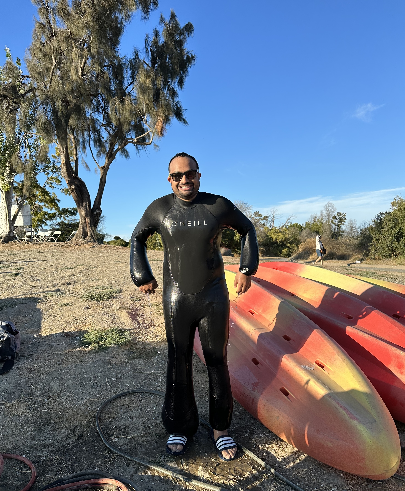
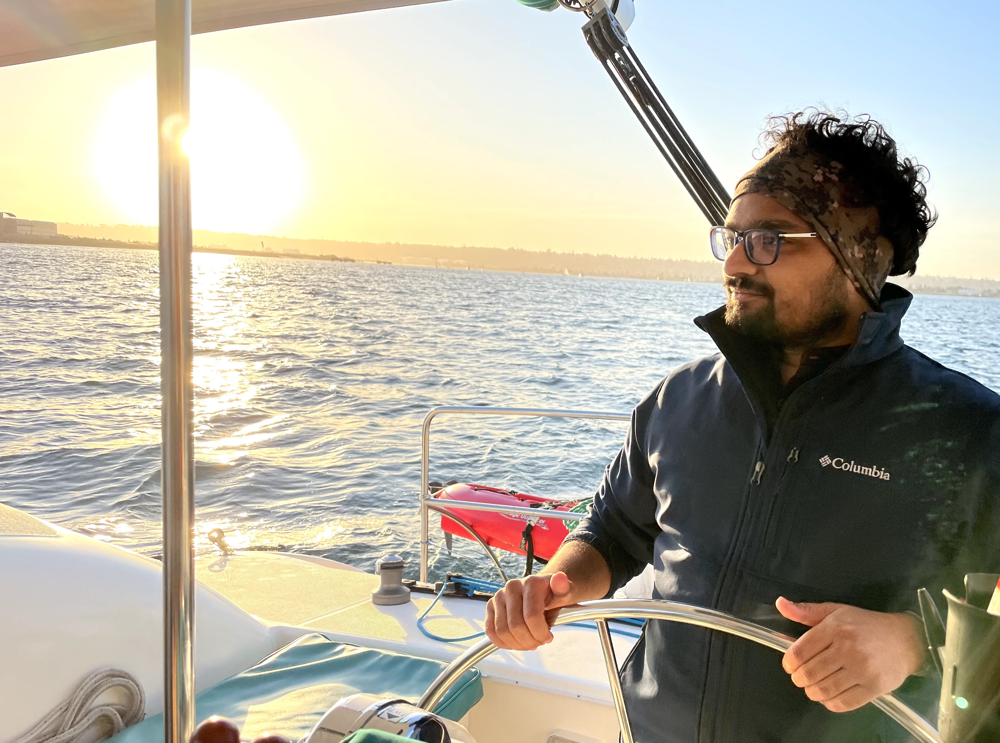
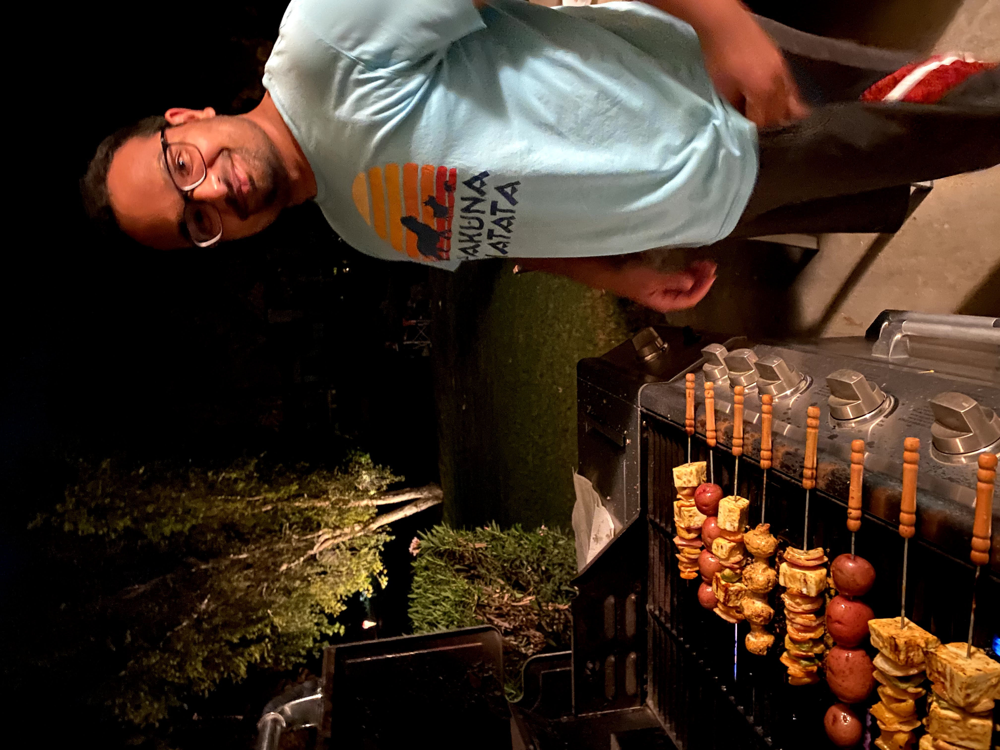

Bay Area, California
Shivam
Lakhotia
Senior Software Engineer · Surfer · Builder
Scroll to explore
Senior Software Engineer · Surfer · Builder
About
I'm Shivam — a Senior Software Engineer at NVIDIA, working on AI Blueprints and developer platforms. I build platforms that make advanced AI systems practical for real products — from C++ streaming frameworks to cloud-native tooling and multimodal AI agents, so teams can move from ideas to production quickly and reliably.
I enjoy designing systems that other engineers build on: Python interfaces over high-performance C++ runtimes, declarative tools for deploying microservices, and reusable RAG backends and AI agents. Before NVIDIA, I studied CS at UC San Diego and worked at Samsung R&D in Bangalore, building offline speech for Bixby. Before that, I completed my bachelor's at IIT Guwahati, where I published research on using Hybrid Memory Cube architectures to accelerate CNNs.
Outside of engineering, I'm usually chasing wind or waves, playing guitar, or planning the next trip.
Experience
NVIDIA AI Blueprints · Santa Clara, CA
Building AI Blueprints and developer platforms at NVIDIA — including Context Aware RAG, a modular RAG backend with Milvus, Elasticsearch, and Neo4j support, and the Video Search and Summarization (VSS) Agent, a multimodal AI agent that ingests long-form video for search, summarization, and Q&A using VLMs and LLMs. Working across the full stack: C++ streaming frameworks, cloud-native microservices, and Python-first developer APIs.
UC San Diego · La Jolla, CA
Graduate studies in computer science, deepening expertise in systems, algorithms, and machine learning at one of the world's top CS programs.
Samsung R&D Institute · Bangalore, India
Built offline speech recognition capabilities for Samsung's Bixby assistant. Users could issue voice commands without internet connectivity — a technically challenging problem at the intersection of NLP, on-device ML, and real-time systems.
IIT Guwahati · Guwahati, India
Bachelor's in Computer Science with a published research paper on using Hybrid Memory Cube (HMC) architecture to improve the efficiency of Convolutional Neural Networks on CPU — an early contribution to hardware-ML co-design.

Beyond the terminal
Chasing swells up and down the California coast — San Diego is home base. There's a particular kind of flow state that only a good wave delivers.
Harnessing wind and water simultaneously at Shoreline, Mountain View. Windsurfing demands technical precision and physical endurance in equal measure.
Best dive so far: Hawaii, with my wife. Dropping below the surface into a world of silence — every dive is a reminder that most of the planet remains unexplored.
Fingerpicking through everything from folk to classical. Music is the other language I've spent years learning to speak fluently.
Strategy, patience, and the joy of a well-calculated sacrifice. Chess teaches you to think three moves ahead — useful in engineering too.
Regulars at Backyard Brews in Palo Alto and Shoreline Cafe in Mountain View. Weekend mornings with a pour-over; evenings experimenting in the kitchen.
Moments



Drop your photos in here — replace the placeholders with real shots from your adventures
Conversations I enjoy
Beyond code and waves, I'm drawn to the bigger questions — about how the mind works, what makes a good life, and how technology shapes human experience.
The science of wellbeing, cognitive biases, and what research actually says about living a fulfilling life.
How machines learn to parse meaning, and what the gap between language and thought reveals about both.
How capital flows, compounding works, and the structural forces that shape economic outcomes.
The emerging dynamics of multi-agent systems — how autonomous agents coordinate, fail, and surprise us.
Building agents that reason over video — combining VLMs, LLMs, and retrieval to make sense of the world frame by frame.
Writing & Research
How we built a multimodal AI agent that ingests long-form video and enables natural language search, summarization, and Q&A using VLMs, LLMs, and a modular RAG backend.
Read on NVIDIA Blog →A practical guide to integrating NVIDIA AI Blueprints into video analytics pipelines — combining structured and unstructured data with multimodal retrieval at scale.
Read on NVIDIA Blog →Undergraduate research at IIT Guwahati — using HMC's high memory bandwidth and near-memory computing to accelerate Convolutional Neural Network inference on CPU.
Read on IEEE Xplore →